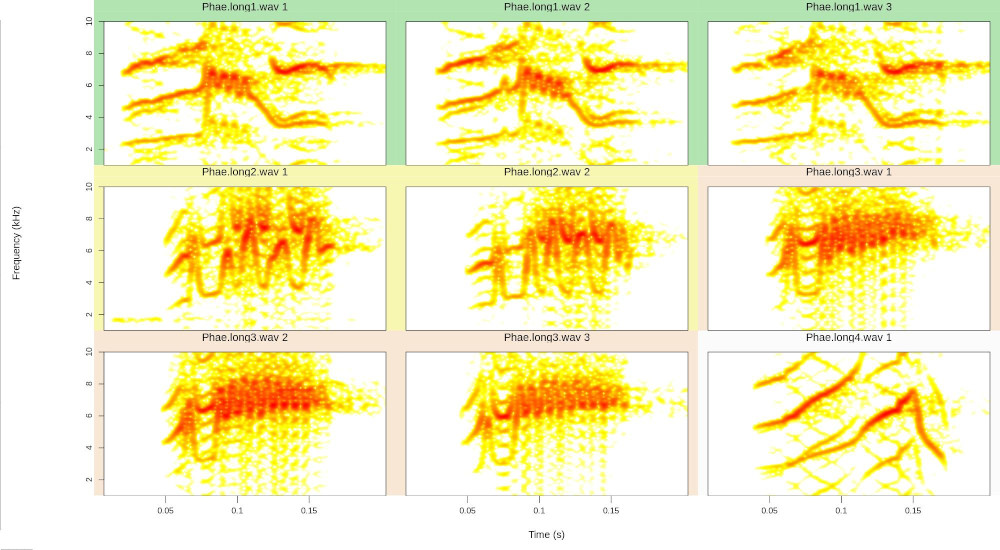

Rraven: Connecting R and Raven Sound Analysis Software
Marcelo Araya-Salas, PhD
“2019-03-11”
Source: vignettes/Rraven.Rmd
Rraven.Rmd
The Rraven package is designed to facilitate the exchange of data between R and Raven sound analysis software (Cornell Lab of Ornithology). Raven provides very powerful tools for the analysis of (animal) sounds. R can simplify the automatization of complex routines of analyses. Furthermore, R packages as warbleR, seewave and monitoR (among others) provide additional methods of analysis, working as a perfect complement for those found in Raven. Hence, bridging these applications can largely expand the bioacoustician’s toolkit.
Currently, most analyses in Raven cannot be run in the background from a command terminal. Thus, most Rraven functions are design to simplify the exchange of data between the two programs, and in some cases, export files to Raven for further analysis. This vignette provides detailed examples for each function in Rraven, including both the R code as well as the additional steps in Raven required to fully accomplished the analyses. Raven Pro must be installed to be able to run some of the code. Note that the animations explaining these additional Raven steps are shown in more detail in the github version of this vignette, which can be downloaded as follows (saves the file “Rraven.hitgub.html” in your current working directory):
The downloaded file can be opened by any internet browser.
Before getting into the functions, the packages must be installed and loaded. I recommend using the latest developmental version, which is found in github. To do so, you need the R package devtools (which of course should be installed!). Some warbleR functions and example data sets will be used, so warbleR should be installed as well:
devtools::install_github("maRce10/warbleR")
devtools::install_github("maRce10/Rraven")
#from CRAN would be
#install.packages("warbleR")
#load packages
library(warbleR)
library(Rraven)
Let’s also use a temporary folder as the working directory i which to save all sound files and data files:
setwd(tempdir())
#load example data
data(list = c("Phae.long1", "Phae.long2", "Phae.long3", "Phae.long4", "selec.table", "selection_files"))
#save sound files in temporary directory
writeWave(Phae.long1,"Phae.long1.wav")
writeWave(Phae.long2,"Phae.long2.wav")
writeWave(Phae.long3,"Phae.long3.wav")
writeWave(Phae.long4,"Phae.long4.wav")
#save Raven selection tables in the temporary directory
out <- lapply(1:4, function(x)
writeLines(selection_files[[x]], con = names(selection_files)[x]))
#this is the temporary directory location (of course different each time is run)
getwd()
Importing data from Raven
imp_raven
This function imports Raven selection tables. Multiple files can be imported at once. Raven selection tables including data from multiple recordings can also be imported. It returns a single data frame with the information contained in the selection files. We already have 2 Raven selection tables in the working directory:
[1] "LBH 1 selection table example.txt" "LBH 2 selection table example.txt" "LBH 3 selection table example.txt" "LBH 4 selection table example.txt"
This code shows how to import all the data contained in those files into R:
#providing the name of the column with the sound file names
rvn.dat <- imp_raven(all.data = TRUE)
head(rvn.dat)| Selection | View | Channel | Begin Time (s) | End Time (s) | Low Freq (Hz) | High Freq (Hz) | Begin File | channel | Begin Path | File Offset (s) | selec.file | File Offset |
|---|---|---|---|---|---|---|---|---|---|---|---|---|
| 1 | Spectrogram 1 | 1 | 1.1693549 | 1.3423884 | 2220.105 | 8604.378 | Phae.long1.wav | 1 | /tmp/RtmpWpOeaR/Phae.long1.wav | 1.1693549 | LBH 1 selection table example.txt | NA |
| 2 | Spectrogram 1 | 1 | 2.1584085 | 2.3214565 | 2169.437 | 8807.053 | Phae.long1.wav | 1 | /tmp/RtmpWpOeaR/Phae.long1.wav | 2.1584085 | LBH 1 selection table example.txt | NA |
| 3 | Spectrogram 1 | 1 | 0.3433366 | 0.5182553 | 2218.294 | 8756.604 | Phae.long1.wav | 1 | /tmp/RtmpWpOeaR/Phae.long1.wav | 0.3433366 | LBH 1 selection table example.txt | NA |
| 1 | Spectrogram 1 | 1 | 0.1595983 | 0.2921692 | 2316.862 | 8822.316 | Phae.long2.wav | 1 | /tmp/RtmpWpOeaR/Phae.long2.wav | 0.1595983 | LBH 2 selection table example.txt | NA |
| 2 | Spectrogram 1 | 1 | 1.4570585 | 1.5832087 | 2284.006 | 8888.027 | Phae.long2.wav | 1 | /tmp/RtmpWpOeaR/Phae.long2.wav | 1.4570585 | LBH 2 selection table example.txt | NA |
| 1 | Spectrogram 1 | 1 | 0.6265520 | 0.7577715 | 3006.834 | 8822.316 | Phae.long3.wav | 1 | /tmp/RtmpWpOeaR/Phae.long3.wav | NA | LBH 3 selection table example.txt | 0.626552 |
Note that the ‘waveform’ view data has been removed. It can also be imported as follows (but note that the example selection tables have no waveform data):
Raven selections can also be imported in a ‘selection.table’ format so it can be directly input into warbleR functions. To do this you need to set the all.data = FALSE and indicate which column contains the sound file name (using the ‘sound.file.col’ argument):
#providing the name of the column with the sound file names
rvn.dat <- imp_raven(sound.file.col = "End.File", all.data = FALSE, freq.cols = TRUE)
head(rvn.dat)| sound.files | channel.Channel | channel.channel | selec | start | end | selec.file | bottom.freq | top.freq |
|---|---|---|---|---|---|---|---|---|
| Phae.long1.wav | 1 | 1 | 1 | 1.1693549 | 1.3423884 | LBH 1 selection table example.txt | 2.220105 | 8.604378 |
| Phae.long1.wav | 1 | 1 | 2 | 2.1584085 | 2.3214565 | LBH 1 selection table example.txt | 2.169437 | 8.807053 |
| Phae.long1.wav | 1 | 1 | 3 | 0.3433366 | 0.5182553 | LBH 1 selection table example.txt | 2.218294 | 8.756604 |
| Phae.long2.wav | 1 | 1 | 1 | 0.1595983 | 0.2921692 | LBH 2 selection table example.txt | 2.316862 | 8.822316 |
| Phae.long2.wav | 1 | 1 | 2 | 1.4570585 | 1.5832087 | LBH 2 selection table example.txt | 2.284006 | 8.888027 |
| Phae.long3.wav | 1 | 1 | 1 | 0.6265520 | 0.7577715 | LBH 3 selection table example.txt | 3.006834 | 8.822316 |
The data frame contains the following columns: sound.files, channel, selec, start, end, and selec.file. You can also import the frequency range parameters in the ‘selection.table’ by setting ‘freq.cols’ tp TRUE. The data frame returned by “imp_raven” (when in the ‘warbleR’ format) can be input into several warbleR functions for further analysis. For instance, the following code runs additional parameter measurements on the imported selections:
# convert to class selection.table
rvn.dat.st <- make.selection.table(rvn.dat)
sp <- specan(X = rvn.dat, bp = "frange", wl = 150, pb = FALSE, ovlp = 90)
head(sp)checking selections (step 1 of 2):
all selections are OK | sound.files | selec | top.freq | bottom.freq | duration | meanfreq | sd | freq.median | freq.Q25 | freq.Q75 | freq.IQR | time.median | time.Q25 | time.Q75 | time.IQR | skew | kurt | sp.ent | time.ent | entropy | sfm | meandom | mindom | maxdom | dfrange | modindx | startdom | enddom | dfslope | meanpeakf |
|---|---|---|---|---|---|---|---|---|---|---|---|---|---|---|---|---|---|---|---|---|---|---|---|---|---|---|---|---|---|
| Phae.long1.wav | 1 | 8.604378 | 2.220105 | 0.1730334 | 5.982350 | 1.399687 | 6.331716 | 5.296584 | 6.869521 | 1.572937 | 0.0764552 | 0.0465681 | 0.1174629 | 0.0708948 | 1.998039 | 7.021565 | 0.9434287 | 0.8869044 | 0.8367310 | 0.6510024 | 6.491049 | 3.825 | 8.325 | 4.50 | 7.200000 | 6.975 | 7.575 | 3.467538 | 7.125 |
| Phae.long1.wav | 2 | 8.807053 | 2.169437 | 0.1630480 | 5.997299 | 1.422930 | 6.212125 | 5.328746 | 6.880795 | 1.552049 | 0.0766553 | 0.0439026 | 0.1156798 | 0.0717772 | 1.918356 | 7.334323 | 0.9468217 | 0.8885655 | 0.8413131 | 0.6678647 | 6.713936 | 3.975 | 8.475 | 4.50 | 4.900000 | 6.825 | 7.275 | 2.759923 | 6.975 |
| Phae.long1.wav | 3 | 8.756604 | 2.218294 | 0.1749187 | 6.020600 | 1.515536 | 6.428439 | 5.152811 | 6.983309 | 1.830498 | 0.0902434 | 0.0534519 | 0.1277291 | 0.0742772 | 2.495361 | 11.139125 | 0.9450824 | 0.8866543 | 0.8379614 | 0.6715892 | 6.532707 | 2.325 | 8.625 | 6.30 | 10.309524 | 2.925 | 7.275 | 24.868690 | 7.125 |
| Phae.long2.wav | 1 | 8.822316 | 2.316862 | 0.1325709 | 6.398304 | 1.340412 | 6.595971 | 5.607323 | 7.380852 | 1.773529 | 0.0768669 | 0.0543005 | 0.1036645 | 0.0493641 | 1.568523 | 6.016392 | 0.9424661 | 0.8954798 | 0.8439594 | 0.6086184 | 6.482865 | 4.875 | 8.025 | 3.15 | 11.476190 | 4.875 | 6.225 | 10.183230 | 7.425 |
| Phae.long2.wav | 2 | 8.888027 | 2.284006 | 0.1261502 | 6.311837 | 1.370040 | 6.602020 | 5.609829 | 7.213209 | 1.603380 | 0.0761028 | 0.0528492 | 0.0979471 | 0.0450980 | 2.468996 | 10.884349 | 0.9357710 | 0.8976772 | 0.8400203 | 0.6151042 | 6.176143 | 3.075 | 7.725 | 4.65 | 9.580645 | 5.625 | 5.775 | 1.189059 | 6.675 |
| Phae.long3.wav | 1 | 8.822316 | 3.006834 | 0.1312195 | 6.612400 | 1.093120 | 6.670130 | 6.067212 | 7.349366 | 1.282153 | 0.0635054 | 0.0430425 | 0.0896131 | 0.0465706 | 1.773688 | 6.626019 | 0.9302440 | 0.8958878 | 0.8333942 | 0.5702146 | 6.756285 | 4.875 | 8.175 | 3.30 | 11.045454 | 5.475 | 8.025 | 19.433083 | 6.675 |
And this code creates song catalogs:

This is just to mention a few analysis that can be implemented in warbleR.
Rraven also contains the function imp_syrinx to import selections from Syrinx sound analyis software (although this program is not been maintained any longer).
extract_ts
The function extracts parameters encoded as time series in Raven selection tables. The resulting data frame can be directly input into functions for time series analysis of acoustic signals as in the warbleR function dfDTW. The function needs an R data frame, so the data should have been previously imported using imp_raven. This example uses the selection_file.ts example data that comes with Rraven:
#remove previous raven data files
unlink(list.files(pattern = "\\.txt$"))
#save Raven selection table in the temporary directory
writeLines(selection_files[[5]], con = names(selection_files)[5])
rvn.dat <- imp_raven(all.data = TRUE)
# Peak freq contour dif length
fcts <- extract_ts(X = rvn.dat, ts.column = "Peak Freq Contour (Hz)")
head(fcts)| sound.files | selec | PFC..1 | PFC..2 | PFC..3 | PFC..4 | PFC..5 | PFC..6 | PFC..7 | PFC..8 | PFC..9 | PFC..10 | PFC..11 | PFC..12 | PFC..13 | PFC..14 | PFC..15 | PFC..16 | PFC..17 | PFC..18 | PFC..19 | PFC..20 | PFC..21 | PFC..22 | PFC..23 | PFC..24 | PFC..25 | PFC..26 | PFC..27 | PFC..28 | PFC..29 | PFC..30 | PFC..31 | PFC..32 | PFC..33 | PFC..34 | PFC..35 | PFC..36 | PFC..37 | PFC..38 | PFC..39 | PFC..40 | PFC..41 | PFC..42 | PFC..43 | PFC..44 | PFC..45 | PFC..46 | PFC..47 | PFC..48 | PFC..49 | PFC..50 | PFC..51 |
|---|---|---|---|---|---|---|---|---|---|---|---|---|---|---|---|---|---|---|---|---|---|---|---|---|---|---|---|---|---|---|---|---|---|---|---|---|---|---|---|---|---|---|---|---|---|---|---|---|---|---|---|---|
| Phae.long1.wav | 1 | 6943.4 | 7119.1 | 7294.9 | 7294.9 | 7294.9 | 7382.8 | 7470.7 | 7646.5 | 5185.5 | 5273.4 | 5361.3 | 5449.2 | 5449.2 | 5537.1 | 5537.1 | 5712.9 | 6416.0 | 6591.8 | 6591.8 | 5976.6 | 6503.9 | 5712.9 | 6416.0 | 6240.2 | 5976.6 | 6328.1 | 5185.5 | 5009.8 | 4658.2 | 4306.6 | 3955.1 | 7119.1 | 6855.5 | 6767.6 | 6767.6 | 6855.5 | 6943.4 | 7119.1 | 7207.0 | 7207.0 | 7207.0 | 7031.2 | 6943.4 | 6591.8 | 7119.1 | 7119.1 | 7207.0 | 7119.1 | 7207.0 | 7119.1 | 7119.1 |
| Phae.long1.wav | 2 | 6767.6 | 6943.4 | 7207.0 | 7207.0 | 7294.9 | 7382.8 | 7470.7 | 7558.6 | 7558.6 | 7646.5 | 5185.5 | 5361.3 | 5537.1 | 8261.7 | 8261.7 | 8349.6 | 5800.8 | 6152.3 | 6591.8 | 6679.7 | 5888.7 | 6416.0 | 5625.0 | 6152.3 | 5976.6 | 5976.6 | 5976.6 | 5273.4 | 5273.4 | 4570.3 | 4306.6 | 3867.2 | 7119.1 | 6855.5 | 6855.5 | 6855.5 | 6943.4 | 7119.1 | 7207.0 | 7207.0 | 7207.0 | 7207.0 | 7207.0 | 7119.1 | 7119.1 | 7207.0 | 7119.1 | 7207.0 | NA | NA | NA |
| Phae.long1.wav | 3 | 6943.4 | 4746.1 | 7119.1 | 4834.0 | 7207.0 | 4921.9 | 4921.9 | 7558.6 | 7646.5 | 7734.4 | 7998.0 | 8085.9 | 5449.2 | 8085.9 | 8349.6 | 7998.0 | 8701.2 | 6503.9 | 6591.8 | 5800.8 | 6503.9 | 6503.9 | 6328.1 | 6416.0 | 5449.2 | 6152.3 | 5361.3 | 5273.4 | 4921.9 | 4482.4 | 4130.9 | 3779.3 | 6943.4 | 6767.6 | 6767.6 | 6767.6 | 6943.4 | 7031.2 | 7119.1 | 7031.2 | 7294.9 | 7207.0 | 7207.0 | 7031.2 | 7207.0 | 7031.2 | 7031.2 | 7119.1 | 7119.1 | 7207.0 | 7119.1 |
| Phae.long2.wav | 4 | 5888.7 | 6503.9 | 4570.3 | 4834.0 | 5185.5 | 5537.1 | 5537.1 | 5800.8 | 6503.9 | 3779.3 | 6240.2 | 6328.1 | 6416.0 | 6591.8 | 5273.4 | 5712.9 | 4921.9 | 7382.8 | 6064.5 | 6767.6 | 7646.5 | 5800.8 | 7470.7 | 7294.9 | 7382.8 | 5537.1 | 6152.3 | 6416.0 | 5888.7 | 7558.6 | 7207.0 | 7294.9 | 6591.8 | 7822.3 | 7822.3 | 5976.6 | 6064.5 | 6152.3 | 6152.3 | NA | NA | NA | NA | NA | NA | NA | NA | NA | NA | NA | NA |
| Phae.long2.wav | 5 | 4570.3 | 4746.1 | 4921.9 | 5097.7 | 5097.7 | 5185.5 | 5800.8 | 5712.9 | 5888.7 | 5976.6 | 6064.5 | 6064.5 | 4570.3 | 6855.5 | 6855.5 | 5976.6 | 6855.5 | 6679.7 | 6328.1 | 7646.5 | 5712.9 | 7207.0 | 6679.7 | 6591.8 | 6240.2 | 6855.5 | 6943.4 | 6416.0 | 6943.4 | 6591.8 | 6503.9 | 6416.0 | 7558.6 | 6591.8 | 5712.9 | 6591.8 | 5537.1 | NA | NA | NA | NA | NA | NA | NA | NA | NA | NA | NA | NA | NA | NA |
| Phae.long3.wav | 6 | 4218.8 | 6240.2 | 6591.8 | 6679.7 | 7119.1 | 5009.8 | 5800.8 | 6240.2 | 6767.6 | 6416.0 | 6328.1 | 6328.1 | 6503.9 | 6679.7 | 6591.8 | 5537.1 | 6679.7 | 6679.7 | 6591.8 | 6943.4 | 5976.6 | 6591.8 | 7119.1 | 6767.6 | 7470.7 | 6416.0 | 7470.7 | 6591.8 | 7998.0 | 7119.1 | 7910.2 | 7031.2 | 6943.4 | 7470.7 | 6943.4 | 7734.4 | 7119.1 | 7822.3 | 6416.0 | 6855.5 | NA | NA | NA | NA | NA | NA | NA | NA | NA | NA | NA |
Note that these sequences are not all of equal length (one has NAs at the end). extract_ts can also interpolate values so all time series have the same length:
# Peak freq contour equal length
fcts <- extract_ts(X = rvn.dat, ts.column = "Peak Freq Contour (Hz)", equal.length = TRUE)
#look at the last rows wit no NAs
head(fcts)| sound.files | selec | PFC..1 | PFC..2 | PFC..3 | PFC..4 | PFC..5 | PFC..6 | PFC..7 | PFC..8 | PFC..9 | PFC..10 | PFC..11 | PFC..12 | PFC..13 | PFC..14 | PFC..15 | PFC..16 | PFC..17 | PFC..18 | PFC..19 | PFC..20 | PFC..21 | PFC..22 | PFC..23 | PFC..24 | PFC..25 | PFC..26 | PFC..27 | PFC..28 | PFC..29 | PFC..30 |
|---|---|---|---|---|---|---|---|---|---|---|---|---|---|---|---|---|---|---|---|---|---|---|---|---|---|---|---|---|---|---|---|
| Phae.long1.wav | 1 | 6943.4 | 7246.403 | 7294.900 | 7397.955 | 7628.314 | 5240.059 | 5391.610 | 5455.262 | 5537.100 | 6076.572 | 6591.800 | 5997.814 | 5958.383 | 6343.255 | 6025.083 | 5343.100 | 4803.690 | 4197.514 | 7110.010 | 6788.817 | 6810.034 | 6979.752 | 7200.938 | 7207.000 | 6997.897 | 6646.348 | 7119.100 | 7158.503 | 7182.752 | 7119.1 |
| Phae.long1.wav | 2 | 6767.6 | 7107.014 | 7228.217 | 7370.676 | 7513.134 | 7567.693 | 5864.397 | 5421.921 | 8167.748 | 8313.228 | 5873.524 | 6516.024 | 6325.114 | 6361.448 | 5988.655 | 5976.600 | 5976.600 | 5273.400 | 4524.834 | 3958.110 | 7010.024 | 6855.500 | 6913.090 | 7143.348 | 7207.000 | 7207.000 | 7194.876 | 7119.100 | 7173.659 | 7207.0 |
| Phae.long1.wav | 3 | 6943.4 | 6464.479 | 5897.759 | 4921.900 | 7285.838 | 7701.059 | 8028.310 | 5631.041 | 8295.041 | 8361.724 | 6525.117 | 5828.076 | 6503.900 | 6364.472 | 5546.179 | 5470.403 | 5067.348 | 4373.314 | 3888.407 | 6810.034 | 6767.600 | 6961.566 | 7113.038 | 7203.969 | 7207.000 | 7049.386 | 7061.510 | 7079.697 | 7143.348 | 7119.1 |
| Phae.long2.wav | 4 | 5888.7 | 5903.817 | 4733.976 | 5161.259 | 5537.100 | 5682.590 | 6406.921 | 4203.593 | 6282.634 | 6397.814 | 6455.414 | 5455.262 | 5140.107 | 7337.341 | 6306.948 | 7343.431 | 5864.445 | 7422.203 | 7346.428 | 5728.034 | 6206.859 | 6143.259 | 7270.686 | 7219.124 | 6979.717 | 7525.283 | 7695.010 | 6009.941 | 6125.052 | 6152.3 |
| Phae.long2.wav | 5 | 4570.3 | 4788.534 | 5006.769 | 5097.700 | 5182.472 | 5782.614 | 5791.707 | 5949.321 | 6058.438 | 5806.879 | 5515.900 | 6855.500 | 6067.521 | 6831.252 | 6546.334 | 7146.417 | 5979.603 | 7152.452 | 6649.390 | 6385.690 | 6749.414 | 6907.028 | 6579.676 | 6749.414 | 6522.086 | 6455.400 | 7291.897 | 6137.197 | 6379.652 | 5537.1 |
| Phae.long3.wav | 6 | 4218.8 | 6361.441 | 6652.421 | 7046.366 | 5309.834 | 6118.986 | 6743.352 | 6379.628 | 6328.100 | 6522.086 | 6640.297 | 5755.314 | 6679.700 | 6637.266 | 6882.779 | 6082.669 | 6864.541 | 6816.083 | 7252.486 | 6997.903 | 6682.721 | 7785.852 | 7582.848 | 7091.821 | 7088.862 | 7143.410 | 7707.124 | 7337.334 | 6900.931 | 6855.5 |
And the length of the series can also be specified:
# Peak freq contour equal length 10 measurements
fcts <- extract_ts(X = rvn.dat, ts.column = "Peak Freq Contour (Hz)",
equal.length = T, length.out = 10)
head(fcts)| sound.files | selec | PFC..1 | PFC..2 | PFC..3 | PFC..4 | PFC..5 | PFC..6 | PFC..7 | PFC..8 | PFC..9 | PFC..10 |
|---|---|---|---|---|---|---|---|---|---|---|---|
| Phae.long1.wav | 1 | 6943.4 | 7431.633 | 5449.200 | 6533.200 | 6376.933 | 4736.333 | 6767.600 | 7207.000 | 7119.100 | 7119.1 |
| Phae.long1.wav | 2 | 6767.6 | 7402.333 | 5263.633 | 6650.400 | 6357.411 | 5898.467 | 4951.167 | 7041.011 | 7207.000 | 7207.0 |
| Phae.long1.wav | 3 | 6943.4 | 4921.900 | 7792.933 | 7236.333 | 6347.633 | 5000.011 | 6767.600 | 7040.967 | 7128.867 | 7119.1 |
| Phae.long2.wav | 4 | 5888.7 | 5263.633 | 5292.967 | 6533.200 | 7109.367 | 5986.344 | 5742.167 | 7363.267 | 7822.300 | 6152.3 |
| Phae.long2.wav | 5 | 4570.3 | 5097.700 | 5888.700 | 4570.300 | 6855.500 | 5712.900 | 6240.200 | 6943.400 | 7558.600 | 5537.1 |
| Phae.long3.wav | 6 | 4218.8 | 6416.000 | 6533.200 | 6679.700 | 6650.400 | 6943.333 | 7470.700 | 7617.200 | 7470.733 | 6855.5 |
The time series data frame can be directly input into the dfDTW warbleR function to calculate Dynamic Time Warping distances:
| Phae.long1.wav-1 | Phae.long1.wav-2 | Phae.long1.wav-3 | Phae.long2.wav-4 | Phae.long2.wav-5 | Phae.long3.wav-6 | Phae.long3.wav-7 | Phae.long3.wav-8 | Phae.long4.wav-9 | Phae.long4.wav-10 | Phae.long4.wav-11 | |
|---|---|---|---|---|---|---|---|---|---|---|---|
| Phae.long1.wav-1 | 0.000 | 2509.733 | 5702.989 | 9541.189 | 12411.933 | 9648.400 | 7207.000 | 7343.822 | 13740.278 | 11455.400 | 14970.644 |
| Phae.long1.wav-2 | 2509.733 | 0.000 | 5624.778 | 7334.111 | 12333.711 | 10058.778 | 7255.633 | 7734.489 | 14257.911 | 10908.222 | 15107.311 |
| Phae.long1.wav-3 | 5702.989 | 5624.778 | 0.000 | 10615.033 | 11620.856 | 11044.989 | 8046.644 | 7675.456 | 15077.767 | 13476.378 | 14696.922 |
| Phae.long2.wav-4 | 9541.189 | 7334.111 | 10615.033 | 0.000 | 7665.756 | 9111.456 | 7587.778 | 7109.267 | 11318.256 | 10683.489 | 11572.133 |
| Phae.long2.wav-5 | 12411.933 | 12333.711 | 11620.856 | 7665.756 | 0.000 | 8466.933 | 9160.356 | 8339.722 | 10839.778 | 13535.000 | 9902.211 |
| Phae.long3.wav-6 | 9648.400 | 10058.778 | 11044.989 | 9111.456 | 8466.933 | 0.000 | 6464.633 | 6425.533 | 16122.967 | 15234.567 | 14413.978 |
| Phae.long3.wav-7 | 7207.000 | 7255.633 | 8046.644 | 7587.778 | 9160.356 | 6464.633 | 0.000 | 4882.822 | 13144.400 | 11689.300 | 13095.311 |
| Phae.long3.wav-8 | 7343.822 | 7734.489 | 7675.456 | 7109.267 | 8339.722 | 6425.533 | 4882.822 | 0.000 | 13711.033 | 13144.478 | 13515.511 |
| Phae.long4.wav-9 | 13740.278 | 14257.911 | 15077.767 | 11318.256 | 10839.778 | 16122.967 | 13144.400 | 13711.033 | 0.000 | 10517.489 | 9424.156 |
| Phae.long4.wav-10 | 11455.400 | 10908.222 | 13476.378 | 10683.489 | 13535.000 | 15234.567 | 11689.300 | 13144.478 | 10517.489 | 0.000 | 9725.811 |
| Phae.long4.wav-11 | 14970.644 | 15107.311 | 14696.922 | 11572.133 | 9902.211 | 14413.978 | 13095.311 | 13515.511 | 9424.156 | 9725.811 | 0.000 |
relabel_colms
This is a simple function to relabel columns so they match the selection table format used in warbleR:
#to simplify the example select a subset of the columns
st1 <- rvn.dat[ ,1:7]
#check original column names
st1
Additional columns can also be relabeled:
# 2 additional column
relabel_colms(st1, extra.cols.name = "View",
extra.cols.new.name = "Raven view")| selec | Raven view | Channel | start | end | bottom.freq | top.freq |
|---|---|---|---|---|---|---|
| 1 | Spectrogram 1 | 1 | 1.169355 | 1.342388 | 2220.1 | 8604.4 |
| 2 | Spectrogram 1 | 1 | 2.158408 | 2.321457 | 2169.4 | 8807.1 |
| 3 | Spectrogram 1 | 1 | 0.343337 | 0.518255 | 2218.3 | 8756.6 |
| 4 | Spectrogram 1 | 1 | 2.659643 | 2.792214 | 2316.9 | 8822.3 |
| 5 | Spectrogram 1 | 1 | 3.957103 | 4.083253 | 2284.0 | 8888.0 |
| 6 | Spectrogram 1 | 1 | 4.826641 | 4.957860 | 3006.8 | 8822.3 |
| 7 | Spectrogram 1 | 1 | 6.174302 | 6.304481 | 2776.8 | 8888.0 |
| 8 | Spectrogram 1 | 1 | 4.323453 | 4.454670 | 2316.9 | 9315.2 |
| 9 | Spectrogram 1 | 1 | 7.916900 | 8.062325 | 2514.0 | 9216.6 |
| 10 | Spectrogram 1 | 1 | 9.332781 | 9.476967 | 2579.7 | 10235.1 |
| 11 | Spectrogram 1 | 1 | 6.545487 | 6.690585 | 2579.7 | 9742.3 |
imp_corr_mat
The function imports the output of a batch correlation routine in Raven. Both the correlation and lag matrices contained in the output ‘.txt’ file are read and both waveform and spectrogram (cross-correlation) correlations can be imported.
This example shows how to input the sound files into Raven and how to bring the results back to R. First, the selections need to be cut as single sound files for the Raven correlator to be able to read it. We can do this using the cut_sels function from warbleR:
#create new folder to put cuts
dir.create("cuts")
# add a rowname column to be able to match cuts and selections
selec.table$rownames <- sprintf("%02d",1:nrow(selec.table))
# cut files
cut_sels(X = selec.table, mar = 0.05, path = tempdir(), dest.path = file.path(tempdir(), "cuts"), labels = c("rownames", "sound.files", "selec"), pb = FALSE)
#list cuts
list.files(path = file.path(tempdir(), "cuts"))
Every selection is in its own sound file (labeled as paste("rownames", "sound.files", "selec")). Now open Raven and run the batch correlator on the ‘cuts’ folder as follows:

And then import the output file into R:
# Import output (change the name of the file if you used a different one)
xcorr.rav <- imp_corr_mat(file = "BatchCorrOutput.txt", path = tempdir())
The function returns a list containing the correlation matrix:
| 01-Phae.long1-1.wav | 10-Phae.long4-2.wav | 11-Phae.long4-3.wav | 07-Phae.long3-2.wav | 05-Phae.long2-2.wav | 09-Phae.long4-1.wav | 04-Phae.long2-1.wav | 02-Phae.long1-2.wav | 06-Phae.long3-1.wav | 03-Phae.long1-3.wav | 08-Phae.long3-3.wav | |
|---|---|---|---|---|---|---|---|---|---|---|---|
| 01-Phae.long1-1.wav | 1.000 | 0.216 | 0.184 | 0.285 | 0.443 | 0.195 | 0.145 | 0.613 | 0.360 | 0.812 | 0.236 |
| 10-Phae.long4-2.wav | 0.216 | 1.000 | 0.781 | 0.290 | 0.235 | 0.907 | 0.289 | 0.176 | 0.204 | 0.209 | 0.323 |
| 11-Phae.long4-3.wav | 0.184 | 0.781 | 1.000 | 0.279 | 0.186 | 0.804 | 0.274 | 0.127 | 0.189 | 0.185 | 0.393 |
| 07-Phae.long3-2.wav | 0.285 | 0.290 | 0.279 | 1.000 | 0.433 | 0.281 | 0.270 | 0.251 | 0.635 | 0.274 | 0.496 |
| 05-Phae.long2-2.wav | 0.443 | 0.235 | 0.186 | 0.433 | 1.000 | 0.197 | 0.243 | 0.449 | 0.397 | 0.363 | 0.304 |
| 09-Phae.long4-1.wav | 0.195 | 0.907 | 0.804 | 0.281 | 0.197 | 1.000 | 0.310 | 0.164 | 0.199 | 0.214 | 0.322 |
| 04-Phae.long2-1.wav | 0.145 | 0.289 | 0.274 | 0.270 | 0.243 | 0.310 | 1.000 | 0.151 | 0.302 | 0.182 | 0.256 |
| 02-Phae.long1-2.wav | 0.613 | 0.176 | 0.127 | 0.251 | 0.449 | 0.164 | 0.151 | 1.000 | 0.264 | 0.448 | 0.200 |
| 06-Phae.long3-1.wav | 0.360 | 0.204 | 0.189 | 0.635 | 0.397 | 0.199 | 0.302 | 0.264 | 1.000 | 0.318 | 0.377 |
| 03-Phae.long1-3.wav | 0.812 | 0.209 | 0.185 | 0.274 | 0.363 | 0.214 | 0.182 | 0.448 | 0.318 | 1.000 | 0.227 |
| 08-Phae.long3-3.wav | 0.236 | 0.323 | 0.393 | 0.496 | 0.304 | 0.322 | 0.256 | 0.200 | 0.377 | 0.227 | 1.000 |
and the time lag matrix:
| 01-Phae.long1-1.wav | 10-Phae.long4-2.wav | 11-Phae.long4-3.wav | 07-Phae.long3-2.wav | 05-Phae.long2-2.wav | 09-Phae.long4-1.wav | 04-Phae.long2-1.wav | 02-Phae.long1-2.wav | 06-Phae.long3-1.wav | 03-Phae.long1-3.wav | 08-Phae.long3-3.wav | |
|---|---|---|---|---|---|---|---|---|---|---|---|
| 01-Phae.long1-1.wav | 0.000 | 0.011 | 0.006 | 0.028 | 0.034 | 0.006 | 0.023 | 0.000 | 0.023 | -0.006 | 0.023 |
| 10-Phae.long4-2.wav | -0.011 | 0.000 | -0.006 | 0.040 | 0.023 | -0.006 | -0.028 | -0.017 | 0.040 | -0.017 | 0.057 |
| 11-Phae.long4-3.wav | -0.006 | 0.006 | 0.000 | 0.046 | 0.028 | 0.000 | -0.023 | -0.074 | 0.046 | -0.011 | 0.063 |
| 07-Phae.long3-2.wav | -0.028 | -0.040 | -0.046 | 0.000 | -0.011 | -0.046 | -0.023 | -0.034 | 0.000 | -0.028 | 0.017 |
| 05-Phae.long2-2.wav | -0.034 | -0.023 | -0.028 | 0.011 | 0.000 | -0.028 | 0.017 | -0.028 | 0.023 | -0.040 | 0.006 |
| 09-Phae.long4-1.wav | -0.006 | 0.006 | 0.000 | 0.046 | 0.028 | 0.000 | -0.023 | 0.034 | 0.046 | -0.011 | 0.063 |
| 04-Phae.long2-1.wav | -0.023 | 0.028 | 0.023 | 0.023 | -0.017 | 0.023 | 0.000 | -0.057 | 0.057 | -0.051 | 0.017 |
| 02-Phae.long1-2.wav | 0.000 | 0.017 | 0.074 | 0.034 | 0.028 | -0.034 | 0.057 | 0.000 | 0.040 | 0.000 | 0.023 |
| 06-Phae.long3-1.wav | -0.023 | -0.040 | -0.046 | 0.000 | -0.023 | -0.046 | -0.057 | -0.040 | 0.000 | -0.028 | 0.000 |
| 03-Phae.long1-3.wav | 0.006 | 0.017 | 0.011 | 0.028 | 0.040 | 0.011 | 0.051 | 0.000 | 0.028 | 0.000 | 0.023 |
| 08-Phae.long3-3.wav | -0.023 | -0.057 | -0.063 | -0.017 | -0.006 | -0.063 | -0.017 | -0.023 | 0.000 | -0.023 | 0.000 |
This output is ready for stats. For instance, the following code runs a mantel test between cross-correlation (converted to distances) and warbleR spectral parameter pairwise dissimilarities:
#convert cross-corr to distance
xcorr.rvn <- 1- xcorr.rav$correlation
#sort matrix to match selection table
xcorr.rvn <- xcorr.rvn[order(rownames(xcorr.rvn)), order(colnames(xcorr.rvn))]
#convert it to distance matrix
xcorr.rvn <- as.dist(xcorr.rvn)
# measure acoustic parameters
sp.wrblR <- specan(selec.table, bp = c(1, 11), wl = 150, pb = FALSE)
#convert them to distance matrix
dist.sp.wrblR <- dist(sp.wrblR)Warning in dist(sp.wrblR): NAs introduced by coercion
Mantel statistic based on Pearson's product-moment correlation
Call:
vegan::mantel(xdis = xcorr.rvn, ydis = dist.sp.wrblR)
Mantel statistic r: 0.259
Significance: 0.021
Upper quantiles of permutations (null model):
90% 95% 97.5% 99%
0.150 0.191 0.231 0.287
Permutation: free
Number of permutations: 999
There is actually a good match between the two methods!
Exporting R data to Raven
exp_raven
exp_raven saves a selection table in ‘.txt’ format that can be directly opened in Raven. No objects are returned into the R environment. The following code exports a data table from a single sound file:
# Select data for a single sound file
st1 <- selec.table[selec.table$sound.files == "Phae.long1.wav",]
# Export data of a single sound file
exp_raven(st1, file.name = "Phaethornis 1", khz.to.hz = TRUE)
If the path to the sound file is provided, the functions exports a ‘sound selection table’ which can be directly open by Raven (and which will also open the associated sound file):
# Select data for a single sound file
st1 <- selec.table[selec.table$sound.files == "Phae.long1.wav",]
# Export data of a single sound file
exp_raven(st1, file.name = "Phaethornis 1", khz.to.hz = TRUE, sound.file.path = tempdir())
This is useful to add new selections or even new measurements:

If several sound files are available, users can either export them as a single selection file or as multiple selection files (one for each sound file). This example creates a multiple sound file selection:
exp_raven(X = selec.table, file.name = "Phaethornis multiple sound files",
sound.file.path = tempdir(), single.file = TRUE)
These type of tables can be opened as a multiple file display in Raven:

Running Raven from R
run_raven
The function opens multiple sound files simultaneously in Raven. When the analysis is finished (and the Raven window is closed) the data can be automatically imported back into R using the ‘import’ argument. Note that Raven, unlike R, can also handle files in ‘mp3’, ‘flac’ and ‘aif’ format .
# here replace with the path where Raven is install in your computer
raven.path <- "PATH_TO_RAVEN_DIRECTORY_HERE"
# run function
run_raven(raven.path = raven.path, sound.files = c("Phae.long1.wav", "Phae.long2.wav", "Phae.long3.wav", "Phae.long4.wav"), import = TRUE,
all.data = TRUE) 
See imp_raven above for more details on additional settings when importing selections.
raven_batch_detec
As the name suggests, raven_batch_detec runs Raven detector on multiple sound files (sequentially). Batch detection in Raven can also take files in ‘mp3’, ‘flac’ and ‘aif’ format (although this could not be further analyzed in R!).
This is example runs the detector on one of the example sound files that comes by default with Raven:
detec.res <- raven_batch_detec(raven.path = raven.path,
sound.files = "BlackCappedVireo.aif", path = file.path(raven.path, "Examples"))
Please report any bugs here. The Rraven package should be cited as follows:
Araya-Salas, M. (2017), Rraven: connecting R and Raven bioacoustic software. R package version 1.0.0.
Session information
R version 3.5.1 (2018-07-02)
Platform: x86_64-pc-linux-gnu (64-bit)
Running under: Ubuntu 18.10
Matrix products: default
BLAS: /usr/lib/x86_64-linux-gnu/openblas/libblas.so.3
LAPACK: /usr/lib/x86_64-linux-gnu/libopenblasp-r0.3.3.so
locale:
[1] LC_CTYPE=en_US.UTF-8 LC_NUMERIC=C LC_TIME=en_US.UTF-8 LC_COLLATE=en_US.UTF-8 LC_MONETARY=en_US.UTF-8
[6] LC_MESSAGES=en_US.UTF-8 LC_PAPER=en_US.UTF-8 LC_NAME=C LC_ADDRESS=C LC_TELEPHONE=C
[11] LC_MEASUREMENT=en_US.UTF-8 LC_IDENTIFICATION=C
attached base packages:
[1] stats graphics grDevices utils datasets methods base
other attached packages:
[1] kableExtra_0.9.0 knitr_1.20 Rraven_1.0.5 warbleR_1.1.16 NatureSounds_1.0.1 seewave_2.1.0 tuneR_1.3.3
[8] maps_3.3.0
loaded via a namespace (and not attached):
[1] Rcpp_1.0.0 lattice_0.20-35 fftw_1.0-4 assertthat_0.2.0 rprojroot_1.3-2 digest_0.6.18 R6_2.4.0 Sim.DiffProc_4.3
[9] backports_1.1.3 signal_0.7-6 evaluate_0.12 pracma_2.2.2 httr_1.4.0 highr_0.7 pillar_1.3.0 rlang_0.3.1
[17] rstudioapi_0.9.0 vegan_2.5-3 Matrix_1.2-14 rmarkdown_1.10 pkgdown_1.1.0 desc_1.2.0 readr_1.3.1 stringr_1.3.1
[25] RCurl_1.95-4.11 munsell_0.5.0 proxy_0.4-22 compiler_3.5.1 Deriv_3.8.5 pkgconfig_2.0.2 mgcv_1.8-24 htmltools_0.3.6
[33] tidyselect_0.2.5 tibble_1.4.2 roxygen2_6.1.1 dtw_1.20-1 permute_0.9-4 viridisLite_0.3.0 crayon_1.3.4 dplyr_0.7.6
[41] MASS_7.3-50 bitops_1.0-6 commonmark_1.7 grid_3.5.1 nlme_3.1-137 magrittr_1.5 scales_1.0.0 stringi_1.2.4
[49] pbapply_1.4-0 fs_1.2.6 bindrcpp_0.2.2 xml2_1.2.0 rjson_0.2.20 iterators_1.0.10 tools_3.5.1 glue_1.3.0
[57] purrr_0.2.5 hms_0.4.2 jpeg_0.1-8 parallel_3.5.1 yaml_2.2.0 colorspace_1.3-2 cluster_2.0.7-1 soundgen_1.3.2
[65] rvest_0.3.2 memoise_1.1.0 bindr_0.1.1